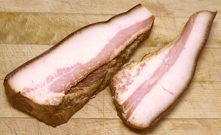

Hog Jowls

While an important ingredient in the American Southeast, folks in
much of North America are not particularly familiar with Hog Jowels.
Basically, it's the pig's cheeks. While the Italian Guanciale is
salt cured with herbs, Hog Jowl in the US is generally salt cured and
smoked like bacon.
In American Southern cuisine, Hog Jowl is used much like bacon.
it can be sliced and fried like bacon, and is often used as a
flavoring ingredient with beans and greens. The larger of the
photo specimens was 6-3/4 inches long, 2 inches thick and 2-1/2 inches
at its widest.
More on Cuts of Pork and
Pork Products.
Buying:
Here in Los Angeles, I find it most often at
the Altadena location of Super King Markets. This store's customers
include a fairly high black population (20% to 25%), some of whom would
know what to do with this ingredient. It is rather difficult to find
anywhere else. Of course, in the US Southeast it is much more common.
Storage:
Stored tightly sealed in the refrigerator
it should last for a couple of weeks. If it gets a few spots of mold on
it, just scrape the mold off before slicing.
Prep:
Basically, just cut it into the desired pieces.
Properly, it will include the skin. If you are just going to fry it,
cut the skin off (and reserve for another use) as it will be quite
tough. If it will be simmered for some time, leave the skin on.
Cooking:
Use as per recipe - or as a substitute for
ham hocks or bacon. Note that jowls have a lot more fat than regular
bacon, and that fat renders rather easily, so you may need to pour
some off.
Subst:
Smoked Bacon, Smoked ham hocks
ap_jowlz 121227 - www.clovegarden.com
©Andrew Grygus - agryg@clovegaden.com - Photos on this
page not otherwise credited are © cg1 -
Linking to and non-commercial use of this page permitted